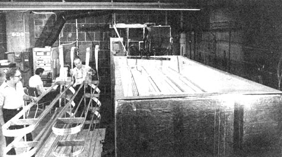
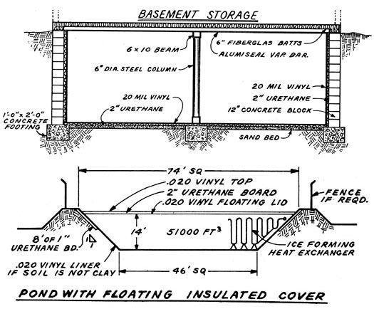

There's an old saying used to describe impractical ideas-"That heats about as well as ice in winter"-which may have just become outdated.
Outdated because a team of engineers at the Oak Ridge National Laboratory in Tennessee have designed, constructed, and are currently testing an energy system that actually does heat a house in winter by turning water into ice. Then, to add frosting to the cake, the system turns right around and uses that same ice to inexpensively air condition the building during the summer!
This seemingly magical process-which is known as the Annual Cycle Energy System (or ACES, for short)-is not based on magic at all. Rather, it is firmly founded on two very scientific speculations.
The first of these assumptions went something like this: "Although heating and cooling always go hand in hand in theory, real life systems only seem to use one of the two. Can't heating and cooling be combined into one system?"
Speculation No. 2 hinged on the fact that throughout most of the United States-from Georgia to the Northern Plains-cold and hot seasons are about equally long. "Wouldn't it be something," wondered the Oak Ridge technicians, "if we could come up with a simple way of storing 'excess' summer heat for use in the winter and 'extra' winter cold for summer cooling?"
And that's exactly what the Oak Ridge engineers did. They found a way to use the summer sun to heat a home in winter and to cool the same dwelling through a sweltering summer with winter ice. How? By figuring out a way to extract both heat and cold from a single energy system built around a big tank of water and a heat pump.
Now the heat pump is nothing new. It was first developed by Lord Kelvin back in 1851 and it's most simply described as "a refrigerator in reverse".
Heat energy, as you know, always flows from warmer areas to cooler and a refrigerator capitalizes on this fact by using a liquid (called a refrigerant) which has a "highest possible temperature" (boiling point) that is colder-at about 27° F-than the freezing point of water.
When such a liquid (usually Freon) is circulated through tubes around an insulated storage box, warmth flows from anything in the container-such as a pan of water-to the circulating fluid. The water, in short, gets colder and colder as the refrigerant accepts more and more heat . . . until, finally, the H20 freezes into ice and the Freon boils.
The refrigerant is then pumped out of the tubes in the insulated box and into a "radiator" where it's pressurized by a compressor. Under this pressure, the fluid's boiling point goes up Oust as water boils at a higher temperature at sea level than it does on a mountaintop) and the refrigerant gets hot . . . hotter, in fact, than the air which surrounds the radiator.
This, of course, causes heat to flow from the circulating medium to the surrounding atmosphere, thereby cooling the Freon gas enough to change it back into a cold liquid (which, as already noted, has a temperature of 27° F or less). And the chilled fluid, as might be expected, is then pumped through the tubes around the freezer chest to repeat the cycle all over again.
And that (turned wrongside out so the emphasis is on the warmth extracted from, instead of the cold collected in, a "storage box") is exactly the way a heat pump works. Refrigerants are circulated through a big "storage container" filled with earth, water, air, or some other physical mass. As they circulate, the moving fluids absorb heat which they will then readily give up at temperatures in the teens and twenties (which is hot for them, but frigid and useless to us). If, however, energy (physical work) is added to the coolant in the form of compression, the circulating medium will give off its warmth at temperatures ranging up into the hundreds of degrees Fahrenheit . . . which is quite suitable for heating water or air for household use.
However, just as a refrigerator extracts heat from an insulated chest and then "wastes" that warmth by blowing it out into the open air, a heat pump-which is designed only to raise the temperature within a house or other closed space-dissipates the cold it "manufactures" in the same wasteful manner.
In short, a refrigerator-which both warms and cools-is used only to cool while a heat pump-which also both warms and cools-is used only to warm. Which is to say that half the potential of each unit is totally wasted by our increasingly energy-hungry society.
Or was totally wasted, until some clever Oak Ridge scientists shook ACES out of their collective sleeve.
The Annual Cycle Energy System, simply stated, is nothing more than a heat pump hooked up to a house on one end and a closed and insulated container filled with 20,000 gallons of water on the other.
During cold weather, the pump circulates Freon-at low pressure-through coils of tubing placed in the water . . . and the water, as you would expect, slowly cools as the circulating refrigerant extracts its heat.
The warmed Freon is next compressed and passed through a heat exchanger where it gives up some of the energy it's collected by raising the temperature of household hot water for bathing, washing dishes, etc.. Then, still under pressure, the warm refrigerant heats living space by moving through a coil which warms air that is blown throughout the house by a fan.
After that, the Freon is allowed to expand under low pressure in an evaporator and the cooled refrigerant is then pumped back to the coils in the big water storage tank to begin another trip through the system.
As this process is repeated again and again throughout the winter, the 20,000 gallons of water gradually gets colder and colder . . . until it finally turns into ice.
If the volume of water in the storage tank, the area of living space being heated, the severity of the cold weather, and the length of winter all balance out just right, the storage bin's contents will be converted almost entirely to ice at precisely the time that spring's warmth begins to surround the house. (Since things seldom work out exactly as expected, however, a supplemental solar panel or two can be added to the system to keep the large tank of water from completely freezing in the middle of, say, an unusually frigid April.)
But that's only half the story because, once the heating season is over, an ACES-equipped house is left sitting on a ready-made source of summer cooling: a giant (20,000 gallons, to be exact) container full of ice.
At this point-except for the heating of household hot water and, possibly, the refreezing of storage tank ice during a particularly sweltering summer-the ACES refrigerant and compressor are retired for the season. In their place, a brine solution is circulated under ordinary atmospheric pressure.
Now a brine, at least for Annual Cycle Energy System purposes, is any solution which freezes at a lower temperature than water. It can be salt water or car antifreeze, it doesn't matter . . . and, unlike the refrigerant used in the ACES heating cycle, the brine solution never boils or evaporates (it's always a liquid).
During the summer this brine is circulated through the house in a long coil of tubing. As warm air in the dwelling is drawn over the tubes, it's cooled . . . and as the air is cooled, the brine is heated.
The warmed solution is then circulated through the 20,000-gallon bin of ice where, as it gives up heat, the ice is warmed. After that, the chilled brine is pumped back through the house coils to pick up another load of heat.
Slowly, over the summer, this circulation gradually melts the storage tank ice back into water . . . thereby getting it ready for the next heating phase.
Ideally, of course, the volume of ice in the container, the area of living space being cooled, the severity of the hot weather, and the length of summer will balance out just right to melt all the ice in the holding tank at precisely the time that fall's chill begins to nip at the house. (If that doesn't happen, though, the "regular" heating compressor can be turned on at night during the summer months to dissipate heat into the nocturnal air and refreeze some of the water thawed during daytime air conditioning.)
In essence, then, the Annual Cycle Energy System traps the heat of the summer sun by using it to melt ice. The water that results represents ice plus accumulated solar energy . . . and the house-warming part of the cycle reclaims and utilizes this stored energy while trapping the excess" cooling potential of winter in the form of ice. Viewed this way, we see that ACES is a circular solar energy storage and retrieval system.
Because it uses the natural energy of each peak season to heat or cool the opposing peak season, the Annual Cycle Energy System is much more efficient than "conventional" heating and cooling methods. ACES' heaviest power requirement is the electricity that its compressor uses in the winter. And during the summer, when it needs energy only to operate the small pumps that keep its brine flowing, the Annual Cycle Energy System's power requirements really plummet.
A 1974 study dramatically demonstrated just how efficient ACES really is. Compared to homes heated by electrical resistance and fuel-fired furnaces (all of which had electrical water heating and air conditioning), the Annual Cycle Energy System house was far superior.
During cold weather, the ACES dwelling drew only about a constant 4 KW while in use . . . which was half as much as a home equipped with an air based heat pump and just one-quarter of the current gobbled by a resistance heated house.
The comparison in summer was even more jolting. Whereas a home outfitted with a "traditional" electrical air conditioner sopped up 7,875 kilowatt hours of energy for cooling, the ACES house was air conditioned throughout June, July, August, and September on only 449 kilowatt hours of electricity.
Besides that, the Annual Cycle Energy System markedly leveled its dwelling's hot weather power needs. Instead of putting a great burden on the local utility for daytime summer cooling, it drew only lightly perhaps 1 kw-from the electrical company at its maximum demand . . . thereby freeing much energy for other summertime work and helping soften the peaks in electrical draw that customarily occur during hot weather.
All told, on an annual basis, the ACES house consumed only 22.7% as much energy as the resistance heated home and just 70% of the "juice" used by the fuel-fired dwelling.
It's worth noting that the Annual Cycle Energy System achieves this efficiency without the use of any "breakthrough" new machinery or "state of the art" exotic technology. The pumps and coils which make up the heart of the heating-cooling unit are very similar to ordinary refrigerator components. In fact, the necessary tubing can be purchased at any plumber's supply house and anyone who's ever worked with refrigerating equipment should be able to assemble his or her own ACES. All the rights to the system are in the public domain.
That's the good news. The bad news (which, in most respects, really isn't very bad at all) is that an Annual Cycle Energy System does take up d fair amount of space. Twenty thousand gallons of water in an insulated box, you know, displaces around 2,700 cubic feet . . . which is a mass measuring 27' X 10' X 10'. Anyone installing ACES has to have a basement, ground level room, or add-on structure (or be willing to build such a space) capable of accepting such a water tank. He or she must also have access to 20,000 gallons of water (this should be no problem for folks tied into a big city water system, but 20,000 gallons can be a big bite Of H20 to take from a well or divert from a stream).
The sheer size of the ACES storage bin and its insulation requirements add up to the Annual Cycle Energy System's second disadvantage: Although it's more efficient and does have lower operating costs than "traditional" heating and cooling installations, it-just like most of the innovative energy systems now under development-is initially more expensive to install than those same "traditional" systems.
Right now, if fabricated of all new materials by a contractor, an ACES installation will cost approximately $1,950 more than a comparable conventional electric furnace plus air conditioner plus hot water heater. Or, to put it another way, outfitting an older home (depending on its construction and previous heating system) with ACES today can run between $3,000 and $4,000.
Then again, it is quite possible-by using personal effort and initiative-to bring that cost down substantially. Even the vexing problem of where to put a gigantic roomful of ice water yields itself to several possible solutions.
If the house being modified has a basement or garage of suitable dimensions, the construction of the ice bin becomes a matter of simply insulating and sealing off a properly sized area. This should be relatively easy and inexpensive (even if walls and floors have to be reinforced to withstand the weight of the water), since most of the storage unit will already have been built as a part of the dwelling. Fig. 1 shows a typical design for a basement ice bin.
An insulated, outdoor ice pond (as shown in Fig. 2) is another distinct possibility. The cost of such a storage pit is low because earth provides the insulation on three sides and a rather inexpensive floating cover protects and insulates the top. In addition, the floating lid itself can be covered with water to make the pond even more practical and nicer to look at. In a hilly region, such an outdoor thermal pond might not even need to be excavated (any suitable natural bowl can be pressed into service as the heat sink/ice warehousing tank). If the mini-lake must be dug, however, any unskilled individual or group of neighbors should be able to handle the job.
Fig. 3 illustrates a third type of bin that is somewhat harder to build from scratch but which can be extremely inexpensive under the right circumstances. In this case, a surplus galvanized metal storage tank (such as an old silo or well section) is equipped with a floating insulated top and wrapped with two inches of urethane foam to convert it into an ice chest/heat sink.
Yet a fourth option might be one of the watertight, underground tanks developed by the Environmental Protection Agency as a manure storage unit for feedlot farmers. The containers are prefabbed of 4' X 10' X 6" modular tongue-and-groove reinforced concrete panels which can withstand loads of 150 pounds per square foot (which makes them strong enough for use as parking lot foundations).
To construct one of the tanks, a concrete floor is poured in the bottom of an excavation, with a 4"-deep by 7"-wide groove left around the edge of the slab for the panels. The prefabbed sections of concrete are then set in position with a crane and sealed with mastic. Total budding time-from initial excavation to final backfill-is only five days.
The EPA tanks are marketed by the Midwest Bunker Silo Company, which is a division of C & B Silo in Charlotte, Michigan. They're available in any length and width (as long as they're in multiples of four feet) and in depths of either eight or ten feet. One of the containers large enough to serve in an ACES installation should expense out at between 600 and 95 cents per cubic foot of capacity. The cost of the insulation for such a storage tank will be the most volatile element in the pricing equation. That is: In the South-where summers are long and hot-an ACES storage unit will need more protection if it's going to carry ice through the warm period than a similar installation will require in, say, Minnesota.
While the volume of water-and, therefore, the size of storage container needed to heat an ACES house is awkwardly large, it is interesting to note that the physical size of the beat sink/ice chamber increases quite slowly as the number of square feet of living space it serves doubles and triples. The water tank, in other words, becomes more and more efficient as it gets bigger, since-as it grows-its surface area makes up a smaller and smaller percentage of its capacity (and this fact lessens heat losses and gains from the container).
What this means is that the Annual Cycle Energy System's advantages can be markedly increased and its disadvantages decreased by installing ACES in a large building . . . or a cluster community of average-sized homes. It is likely, then, that the system will find its principle use-as far as housing is concerned-in heating and cooling building clusters rather than individual dwellings.
Be that as it may and no matter what use of the ACES principle turns out to be best for the future, you can start experimenting with the idea today. Even though the system has not been put into commercial production, it has been tested enough to prove that it works, The Oak Ridge National Laboratory has an operating model about one-eighth the size of an average house unit and General Electric has incorporated ACES into their Pittsburgh environmental test home.
For that matter, although the idea of using in-house space for heat storage may be new to America, the basic ACES concept really isn't that novel anyway. Approximately fifty million square feet of buildings in Japan have thermal storage systems . . . some with built-in tanks holding as much as 1,300,000 gallons of water. The containers have served as heat sources and heat sinks for years and, in addition, add anti-earthquake stability to their buildings as well.
If you'd like to know more about the Annual Cycle Energy System concept, the Oak Ridge National Laboratory has amassed quite a body of information on heat pumps in general and ACES in particular. The papers published by the organization are detailed enough to get anyone with a refrigeration background off to a flying start in designing an Annual Cycle Energy System.
Ordering a complete file of the published ACES material is actually quite easy. Just write to Ms. Carol Oen, Union Carbide Corp., Nuclear Division, P.O. Box Y, Oak Ridge, Tennessee 37830 and ask for it. You might also want to put in a special request for two particular papers: "The Annual Cycle Energy System," by H.C. Fischer and "Seasonal Fuel Utilization Efficiency of Residential Heating Systems". Remember, however, that the Oak Ridge National Lab can provide only such stock printed reports on the subject . . . it has no facilities set up to answer specific questions about the ACES concept.
On the other hand, the lab is currently planning a series of seminars on the Annual Cycle Energy System for potential commercial users of the idea. If you're really serious about ACES, you might be able to attend one of the meetings and learn more about the development directly from its developers. Or just bide your time until late 1976, when commercial ACES plans and equipment should start to move onto the market.
The Annual Cycle Energy System is a major new idea in home heating and cooling. The first somewhat crude prototype of the system is already working quite well and refinements currently under development should make second generation ACES even more efficient. This, then, is one new "alternative" energy concept that most certainly bears close watching.
|
A small experimental energy storage bin (right) and its ice collector units (left), photographed at Oak Ridge. |
 The heart of ACES is a large ice bin, shown on this page in three different versions. ABOVE: The tank can be incorporated into the basement structure of a building. RIGHT. A possible alternative to indoor energy storage is a vinyl-lined pond with a floating insulated lid. BELOW. A third distinct possibility is an insulated galvanized steel bin which can be built above grade. |
 |